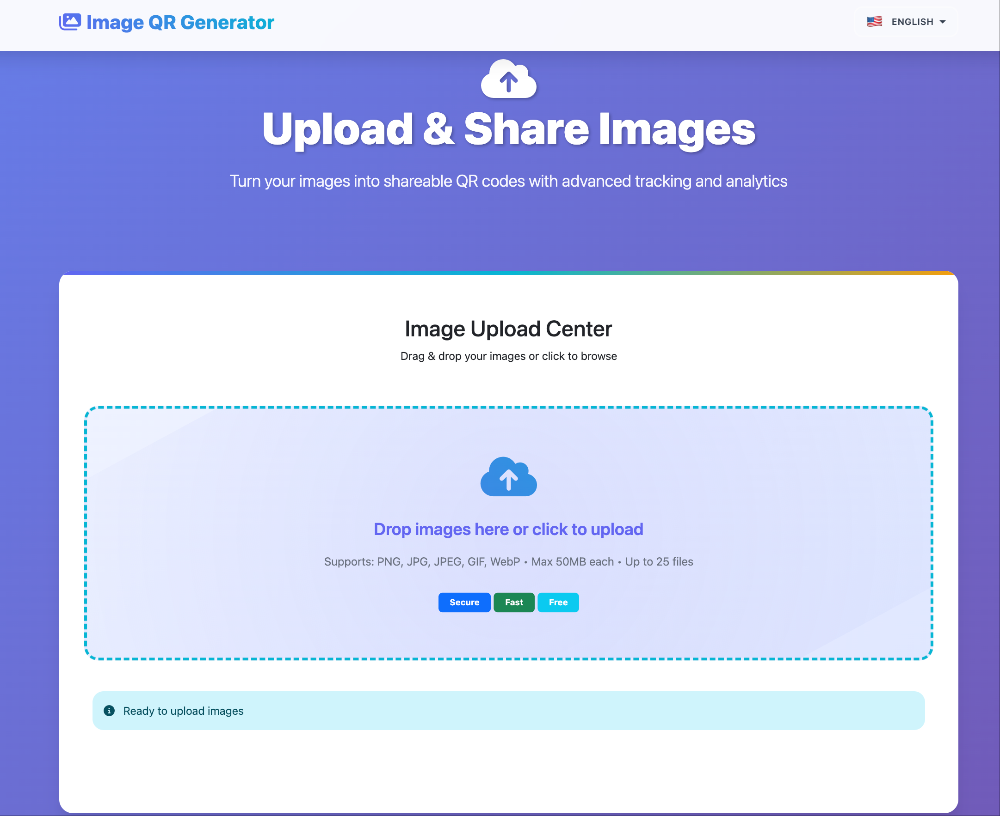
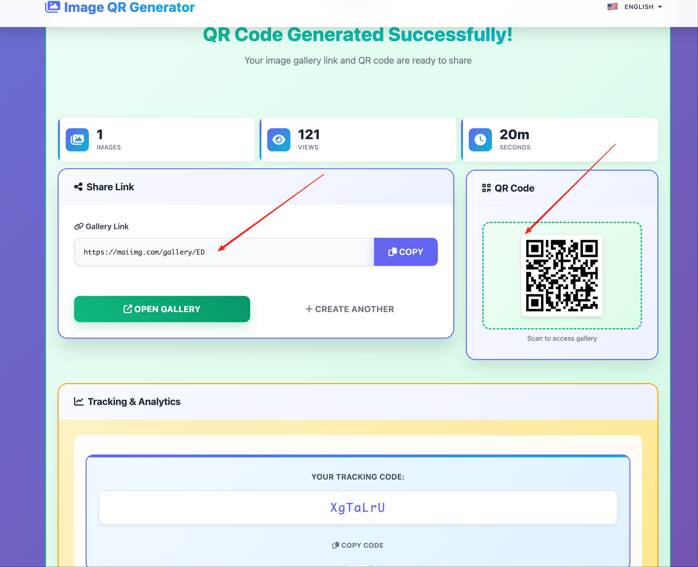

Simple Facebook Photo Album Sharing Guide
For normal Facebook users, one share link is cleaner than posting many image batches.
Interface snapshots

What usually goes wrong
Mixed topics
Travel, family, and event photos in one pile.
Travel, family, and event photos in one pile.
Hard to review
Friends can’t tell where to start.
Friends can’t tell where to start.
Repeated uploads
You re-post the same assets in comments.
You re-post the same assets in comments.
Outdated sets
Old links stay open too long.
Old links stay open too long.
Better flow
- Create one focused set (max 25 images).
- Generate one link.
- Post link in caption/comment with a clear one-line intro.
- Use QR if people also need offline access.
- Disable when no longer needed.